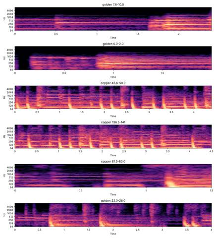
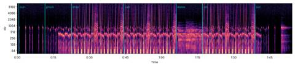
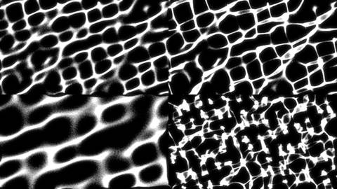
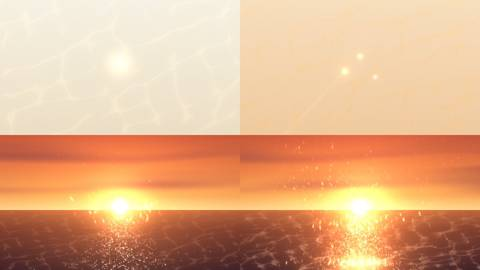

Afterlight / V Mosaic / AFL-22
V · Mosaic · AFL-22 of 22 · 1:54
One Note
The note that produced it
“The mix of all of them, the song, the Warm Dome with lyrics, is crowded and the video is too dark.”
Think more like the One-Note Soul Prism genome: a single radiant strike refracted by pitch into a three-note hook over raw boom-bap, dry, nothing extra.
Pictures sent with it: a DJ set at sunset over the sea, embers above a campfire rising into stars, spark streaks, sun glitter on water, caustic nets, embers turning into a web of light on a pale ground.
What was made
One strike from the first second of Warm Dome & Golden Record, pitched into a three-note figure (0, −2, −4 semitones) over dry 88 bpm boom-bap built from the kick in Sun in Your Eyes. Two sung phrases from Copper Glow answer every four bars, never together. The picture stays bright: a pale paper ground, a sunset over the sea with its glitter, a fire at dusk, a net of caustic light.
Strike alone → prism → drop → carry the glow / golden record → the dome with the only reverb → return → one note · caustics computed by refracting light through a moving water surface
What came back
This is the latest version. The next note has not been written.
Images made while working: contact sheets, check frames, spectrograms, the stills compared before and after a fix. Tap one to see it full size.








No separate critic agent was run on this cut. The critique came from the director, in the notes on either side of it.
On the cut before
“The mix of all of them … is crowded and the video is too dark.” Think like the One-Note Soul Prism genome: one radiant strike refracted by pitch over raw boom-bap; and like a sunset set by the sea, embers rising into stars, sun glitter, caustic nets of light.
Sample map
Every sound placed in the 1:54 study, 619 events by layer, coloured by the track it was cut from. The bars under the map are the whole source tracks; the lit spans are the parts actually used (approximate: stretched and frozen samples are counted by where they start).
The recipe
The function that composed this study, exactly as it ran.
"""AFTERLIGHT · One Note. After the One-Note Soul Prism genome: one radiant strike from the start of Warm Dome & Golden Record,
refracted by pitch (0, -2, -4 semitones) into a three-note ostinato over dry 88 bpm boom-bap built from the kick in Sun in Your Eyes.
Dry everywhere except the break, where the dome itself comes back with the only reverb. Writes onenote.wav, onenote.json (every hit), onenote_env.npz."""
import sys, json, numpy as np
sys.path.insert(0, '/home/claude/afterlight/mosaic')
import sampler as S
from sampler import Mix, cut, resample, lp, hp, bp, reverb, echo, crackle, fade, norm, rms
SR = S.SR
OUT = '/home/claude/afterlight/onenote/'
BPM = 88.0; BEAT = 60 / BPM; BAR = 4 * BEAT; STEP = BEAT / 4
T0 = 0.6 # a breath before the first strike
def bt(bar, step=0.0): return T0 + bar * BAR + step * STEP
SEC = dict(sun=(0, 4), prism=(4, 8), drop=(8, 16), call=(16, 24), dome=(24, 28), ret=(28, 36), out=(36, 40))
NB = 40; DUR = bt(NB) + 4.5
rng = np.random.default_rng(7)
# ---------- sources ----------
NOTE = cut('golden', 0.192, 0.56, 0.002, 0.08) # the first light of Warm Dome: one bright strike, ~833 Hz
def crush(x, rate=26000, bits=12):
"""ASR-10 style: hold samples at a lower rate (aliasing) and quantize"""
k = SR / rate; idx = (np.floor(np.arange(len(x)) / k) * k).astype(int); y = x[np.clip(idx, 0, len(x) - 1)]
q = 2 ** (bits - 1); return np.round(y * q) / q
def note(semis, oct=0, dur=None):
x = resample(NOTE, 2 ** ((semis + 12 * oct) / 12))
if dur: x = fade(x[:int(dur * SR)], 0.001, 0.03)
return crush(x)
KICK = cut('sun', 9.118, 9.38, 0.001, 0.05); KICK = norm(lp(KICK, 9000), 0.9)
SNARE_S = cut('sun', 10.570, 10.80, 0.001, 0.06)
def snare():
n = int(0.22 * SR); t = np.arange(n) / SR
noise = bp(rng.standard_normal((n, 1)), 1800, 7500)[:, 0] * np.exp(-t / 0.055)
body = np.sin(2 * np.pi * 190 * t) * np.exp(-t / 0.04) * 0.6
s = np.stack([noise + body] * 2, 1); s = norm(s, 0.7) + norm(hp(SNARE_S, 400), 0.5)[:n] if len(SNARE_S) >= n else norm(s, 0.7)
return crush(np.tanh(s * 2.2) * 0.7, 30000, 12)
SNARE = snare()
def hat(open_=False):
n = int((0.16 if open_ else 0.04) * SR); t = np.arange(n) / SR
x = hp(rng.standard_normal((n, 1)), 7500)[:, 0] * np.exp(-t / (0.05 if open_ else 0.012))
return np.stack([x, x], 1) * 0.22
def sub(semis, dur=0.42):
f = 833 * 2 ** ((semis - 48) / 12); n = int(dur * SR); t = np.arange(n) / SR
s = np.sin(2 * np.pi * f * t + 2.2 * np.exp(-t / 0.03)) * np.exp(-t / (dur * 0.55))
s = np.tanh(s * 1.6); return np.stack([s, s], 1) * 0.55
def vox(t0, t1):
x = cut('copper', t0, t1, 0.004, 0.08); x = hp(x, 300, 4); x = lp(x, 7000); return crush(norm(x, 0.8), 32000, 13)
CARRY = vox(45.894, 47.55) # 'carry the glow'
GOLD = vox(137.062, 138.75) # 'golden record'
STAB = crush(norm(hp(cut('golden', 22.43, 22.85, 0.002, 0.06), 150), 0.6), 26000, 12)
DOME = cut('golden', 0.0, 10.9, 0.3, 1.2) # the dome itself, for the break
# ---------- score ----------
m = Mix(DUR); HITS = []
def hit(kind, t, **kw): HITS.append(dict(k=kind, t=round(t, 3), **kw))
m.put('dust', crackle(DUR, 28, 0.35), 0, 1.0, tag='dust')
PAT = [[0, 0, -2, -4], [0, 0, -4, -2]] # the three-note refraction, two-bar figure
def ostinato(b, g=1.0, high=0.45, low=True):
for q, s in enumerate(PAT[b % 2]):
t = bt(b, q * 4)
if low: m.put('prism', note(s, -1, BEAT * 0.95), t, g, 'golden', 0.192, f'note{s}')
m.put('prism_hi', note(s, 0, BEAT * 0.9), t, g * high, 'golden', 0.192, f'note{s}')
hit('note', t, semis=s)
def drums(b, full=True):
for st in (0, 7, 10): m.put('kick', KICK, bt(b, st), 1.0, 'sun', 9.118, 'kick'); hit('kick', bt(b, st)); m.kick_at([bt(b, st)])
for st in (4, 12): m.put('snare', SNARE, bt(b, st), 0.9, 'sun', 10.57, 'snare'); hit('snare', bt(b, st))
if full:
for st in range(0, 16, 2):
sw = 0.17 * STEP if st % 4 == 2 else 0 # lazy swing on the off-eighths
m.put('hats', hat(st == 14 and b % 4 == 3), bt(b, st) + sw, 0.9 if st % 4 == 0 else 0.6, None, None, 'hat'); hit('hat', bt(b, st) + sw)
for q, s in enumerate(PAT[b % 2]):
if q in (0, 2): m.put('sub', sub(s), bt(b, q * 4), 1.0, 'golden', 0.192, 'sub')
# I · the sun: one strike, needle-dropped, unpitched, with room between
for b in range(*SEC['sun']):
for st in ([0] if b % 2 == 0 else [0, 10]):
m.put('prism_hi', note(0, 0), bt(b, st), 2.6, 'golden', 0.192, 'strike'); hit('strike', bt(b, st))
# II · the prism: the strike splits into three pitches
for b in range(*SEC['prism']): ostinato(b, 2.0 if b > 5 else 1.7, high=0.6, low=b >= 6)
# III · the drop
for b in range(*SEC['drop']): ostinato(b); drums(b, full=b > 8)
# IV · the call: the record answers
for b in range(*SEC['call']):
ostinato(b); drums(b)
if b % 2 == 1: m.put('stab', STAB, bt(b, 6), 0.7, 'golden', 22.43, 'stab'); hit('stab', bt(b, 6))
# V · the dome: drums out, the dome itself with the only reverb, the prism an octave down
d = bt(SEC['dome'][0]); m.put('dome', fade(DOME, 0.8, 2.5), d, 0.6, 'golden', 0.0, 'dome'); hit('dome', d, dur=round(len(DOME) / SR, 2))
for b in range(*SEC['dome']):
for q, s in enumerate(PAT[b % 2]):
m.put('prism', note(s, -1, BEAT * 1.5), bt(b, q * 4), 0.75, 'golden', 0.192, f'note{s}'); hit('note', bt(b, q * 4), semis=s, soft=1)
# VI · the return
for b in range(*SEC['ret']):
ostinato(b); drums(b)
if b % 4 == 1: m.put('stab', STAB, bt(b, 6), 0.7, 'golden', 22.43, 'stab'); hit('stab', bt(b, 6))
# VII · out: back to one note
for b in range(*SEC['out']):
if b < 38: ostinato(b, 0.8, low=b < 37)
else: m.put('prism_hi', note(0, 0), bt(b, 0), 2.4, 'golden', 0.192, 'strike'); hit('strike', bt(b, 0))
m.put('prism_hi', note(0, 0), bt(NB), 2.6, 'golden', 0.192, 'last'); hit('last', bt(NB))
# the calls: dry, one per four bars, never two at once
for b, x, src_t, tag in [(11, CARRY, 45.894, 'carry the glow'), (15, GOLD, 137.062, 'golden record'), (19, CARRY, 45.894, 'carry the glow'),
(23, GOLD, 137.062, 'golden record'), (31, CARRY, 45.894, 'carry the glow'), (35, GOLD, 137.062, 'golden record')]:
t = bt(b, 8); m.put('vox', x, t, 0.95, 'copper', src_t, tag); hit('vox', t, say=tag, dur=round(len(x) / SR, 2))
# ---------- mix ----------
m.duck(['prism', 'prism_hi', 'stab', 'dome'], depth=0.35, release=0.18)
verb = reverb(m.layers['dome'] + m.layers['prism'] * (np.arange(m.n) / SR > bt(24))[:, None] * (np.arange(m.n) / SR < bt(28))[:, None] * 0.5, 7.0, 2600)[:m.n]
m.layers['verb'] = verb * 0.6
tail = reverb(m.layers['prism_hi'] * ((np.arange(m.n) / SR) > bt(39.9))[:, None], 6.0, 3000)[:m.n]; m.layers['tail'] = tail * 0.7
gains = dict(dust=0.5, prism=0.9, prism_hi=0.7, kick=1.15, snare=0.9, hats=0.55, sub=0.85, stab=0.55, vox=1.0, dome=0.9, verb=1.0, tail=1.0)
out = m.render(gains)
m.save(OUT + 'onenote.wav', out)
json.dump(dict(bpm=BPM, beat=BEAT, bar=BAR, t0=T0, sec={k: [bt(a), bt(b)] for k, (a, b) in SEC.items()}, hits=HITS, dur=DUR), open(OUT + 'score.json', 'w'), indent=0)
print('dur', round(DUR, 2), 'hits', len(HITS), {k: round(rms(v), 4) for k, v in m.layers.items()})
The picture technique
def caustic(t, scale=1.0, speed=1.0, *_, strength=160.0):
"""real caustics: light through a moving water surface, gathered where the refracted rays converge"""
gx_, gy_ = grad_h(t, scale, speed)
px = (_gx + _jx + gx_ * strength * scale) * (CW / GW); py = (_gy + _jy + gy_ * strength * scale) * (CH / GH)
ok = (px >= 0) & (px < CW) & (py >= 0) & (py < CH)
idx = py[ok].astype(np.int32) * CW + px[ok].astype(np.int32)
d = np.bincount(idx, minlength=CW * CH).reshape(CH, CW).astype(np.float32) / (GW * GH / (CW * CH))
d = cv2.GaussianBlur(d, (0, 0), 0.8)
c = np.clip(d - 1.15, 0, None) ** 1.5
c = c / (0.6 + c)
c = c + cv2.GaussianBlur(c, (0, 0), 5) * 0.45
return cv2.resize(c, (W, H), interpolation=cv2.INTER_CUBIC)[..., None]
def sea_scene(t, energy=1.0):
out = SKY.copy()
sunx, suny = 640, HZ - 18
k = pulse(KICK, t, 0.16); n = last_note(t); np_ = np.exp(-(t - n['t']) / 0.5) if n else 0
glow(out, sunx, suny, 26, col('#fff1c8'), 1.6); glow(out, sunx, suny, 120 + 30 * np_, col('#ffb15a'), 0.55 + 0.25 * np_)
glow(out, sunx, suny, 420, col('#ffa04a'), 0.25)
cl = clouds(t) * 0.55; out = out * (1 - cl) + cl * col('#7a3448')
c = sea_caustic(t)
out += c * col('#ffb070') * (0.12 + 0.12 * k) * energy
hp = pulse(HAT, t, 0.08)
out += glitter(t, HZ + 2, sunx, 120, (1.0 + 0.6 * hp + 1.5 * k) * energy) * col('#fff4dc') * 1.4
sp = np.zeros((H, W, 3), np.float32); EM['sea'].draw(sp, t, 0.08, 1.2 * energy)
out += cv2.GaussianBlur(sp, (0, 0), 3) * 0.8 + sp
return out
def frame(t):
w = weights(t); out = np.zeros((H, W, 3), np.float32); tot = 0
for k, a in w.items():
if a < 0.002: continue
if k == 'sun': img = paper_scene(t, 0.0)
elif k == 'prism': img = paper_scene(t, sm(SEC['prism'][0], SEC['prism'][1], t))
elif k == 'out': img = paper_scene(t, 0.0)
elif k == 'drop': img = sea_scene(t, 0.85 + 0.15 * sm(SEC['drop'][0], SEC['drop'][0] + 8, t))
elif k == 'call': img = fire_scene(t)
elif k == 'dome': img = dome_scene(t)
elif k == 'ret':
img = sea_scene(t, 1.1)
f = fire_scene(t, 0.8); img = np.maximum(img, f * 0.0) + np.clip(f - DUSK, 0, None) * 0.9 # embers of the fire over the sea
img += sea_caustic(t, 1.3) * col('#fff0d0') * 0.15
out += img * a; tot += a
out /= max(tot, 1e-6)
tl = title_layer(t)
if tl is not None: out = out * (1 - tl * 0.85) + tl * 0.85 * col('#3a2416')
# bloom, light grain, fade in and out
hi = np.clip(out - 0.85, 0, None); out += cv2.GaussianBlur(hi, (0, 0), 18) * 0.6
over = np.clip(out - 0.82, 0, None); out = np.minimum(out, 0.82) + over / (1 + over * 2.2) # soft shoulder above 0.82 only
out += (np.random.default_rng(int(t * FPS)).standard_normal((H, W, 1)).astype(np.float32) * 0.012)
out *= sm(0, 0.6, t) * (1 - sm(DUR - 1.2, DUR, t))
return np.clip(out, 0, 1)Files
The scripts that made this version, as plain text.
- compose.py113 linesthe nine mosaics: every cut, loop and freeze
- render.py307 linesrenders frames and encodes
A film concept by Sosuke & Watson · CRASH LAB · PAELEO · CINEOSIS LAB